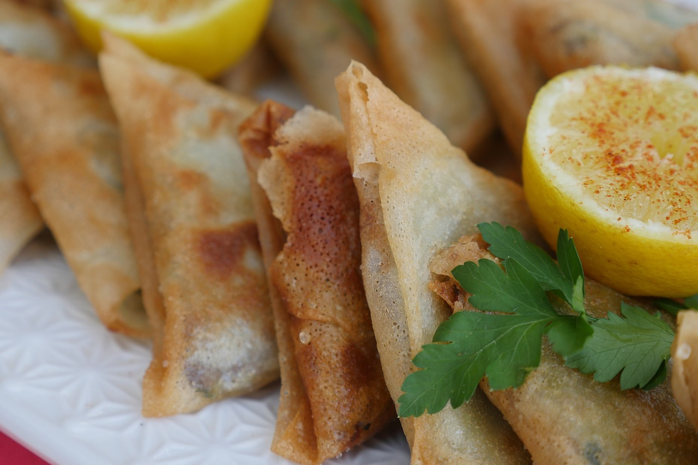

Samosa
What is Samosa
A samosa is a fried South Asian pastry with a savoury filling, including ingredients such as spiced potatoes, onions, peas, meat or fish. It may take different forms, including triangular, cone, or half-moon shapes, depending on the region.

Ingredient List For Pav Bhaji Recipe
- All-purpose flour (Maida)
- Potatoes
- Peas
- Oil
- Cumin seeds
- Onion
- Ginger-garlic paste
- Green chilies
- Spices (coriander powder, cumin powder, garam masala, turmeric, red chili powder)
- Salt
- Water
- Coriander leaves
- Lemon juice
How to make Samosa
Cook Vegetables
1.At first boil potatoes until they are fully cooked. Allow them to cool, peel, and then chop them into small cubes.
2. In a pan, heat oil over medium heat. Add cumin seeds and let them splutter.
3. Add finely chopped onions to the pan and sauté until they turn translucent.
4. Stir in ginger-garlic paste and green chilies. Sauté for a couple of minutes until the raw aroma disappears.
5. Add the boiled potato cubes and peas to the pan. Mix well.
6. Now, add the spices such as coriander powder, cumin powder, turmeric, red chili powder, and garam masala. Season with salt to taste. Cook the filling until the spices are well incorporated, and the mixture is aromatic.
7. Stir in chopped coriander leaves and a splash of lemon juice for a fresh and tangy flavor. Remove the filling from heat and allow it to cool completely.
Make Samosa Pastry Dough
8. Start by preparing the dough for the samosa. In a mixing bowl, combine all-purpose flour (maida) with a pinch of salt. Gradually add water and knead the mixture into a firm and smooth dough. Cover the dough with a damp cloth and let it rest for about 30 minutes.
9. Once the dough has rested, divide it into small equal-sized portions. Roll each portion into a ball and then flatten it into a small disc using a rolling pin.
Assemble and Shape
10. Cut each disc in half to create two semi-circles.
11. Take one semi-circle and fold it into a cone shape, sealing the edges with a little water to form a cone. Fill the cone with the prepared potato and pea mixture.
12. Seal the open end of the cone to create a triangular shape. Ensure that the edges are well sealed to prevent the filling from spilling out during frying.
13. Repeat the process with the remaining dough and filling to make all the samosas.
14. Heat oil in a deep frying pan over medium heat. Once the oil is hot, carefully slide the samosas into the hot oil and fry until they turn golden brown and crispy. Make sure to fry them in batches, if necessary, to avoid overcrowding the pan.
15. Once the samosas are golden brown and crisp, remove them from the oil and place them on a paper towel-lined plate to remove excess oil.
16. Serve the hot and crispy samosas with tamarind chutney, mint chutney, or your favorite dipping sauce.